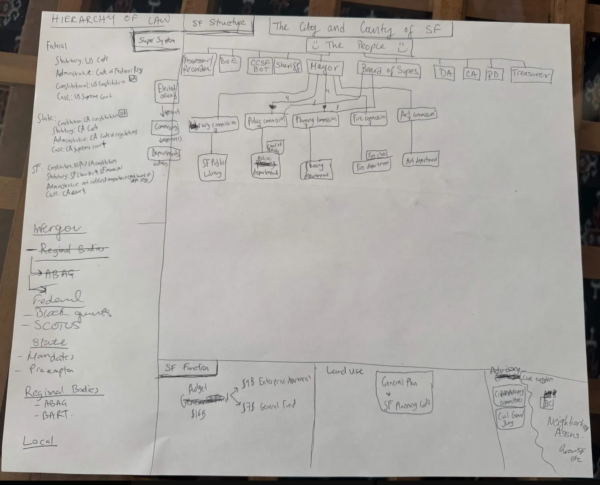
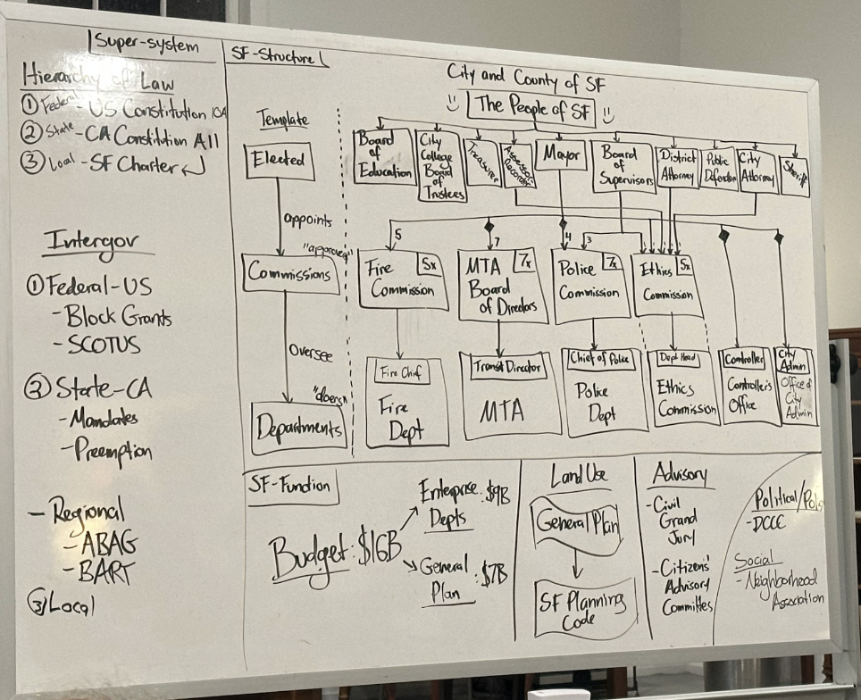
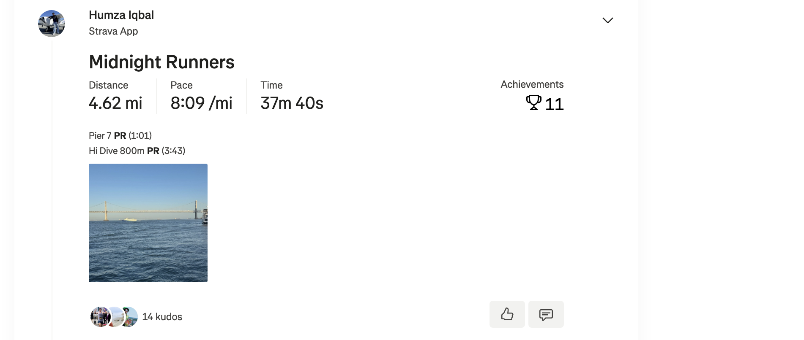
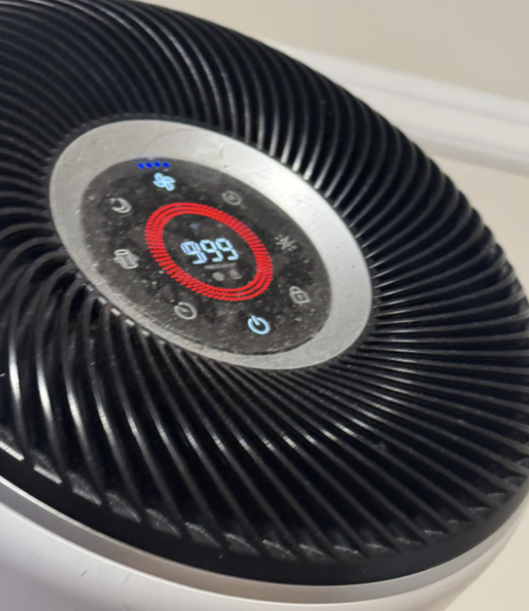
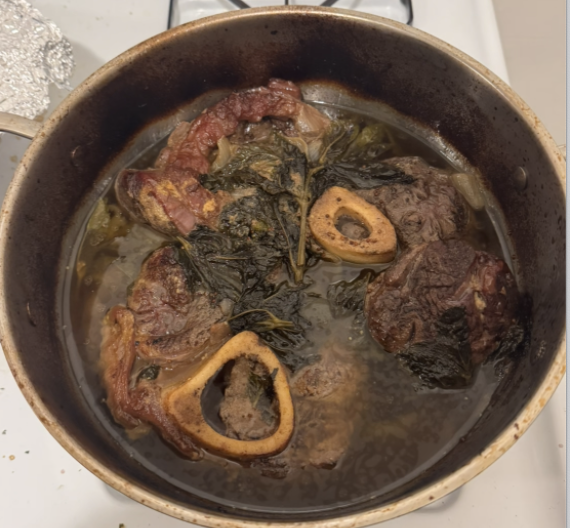
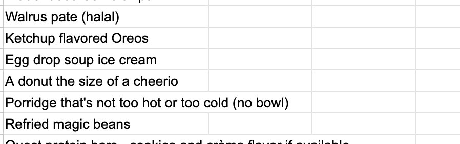
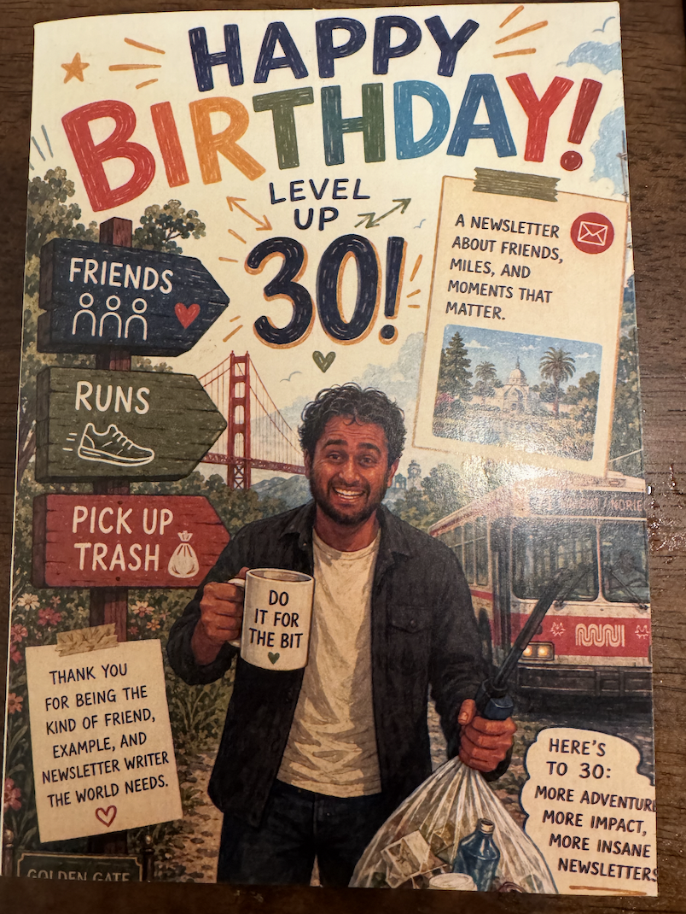
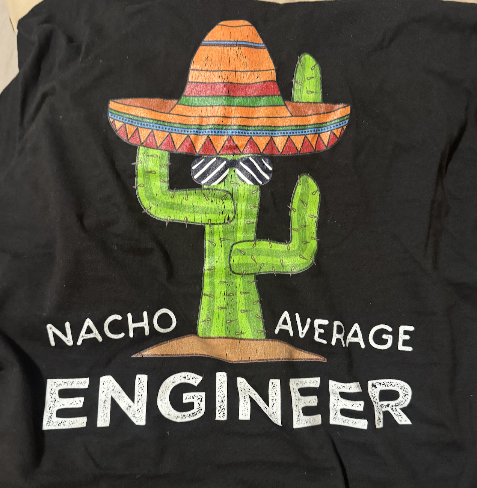
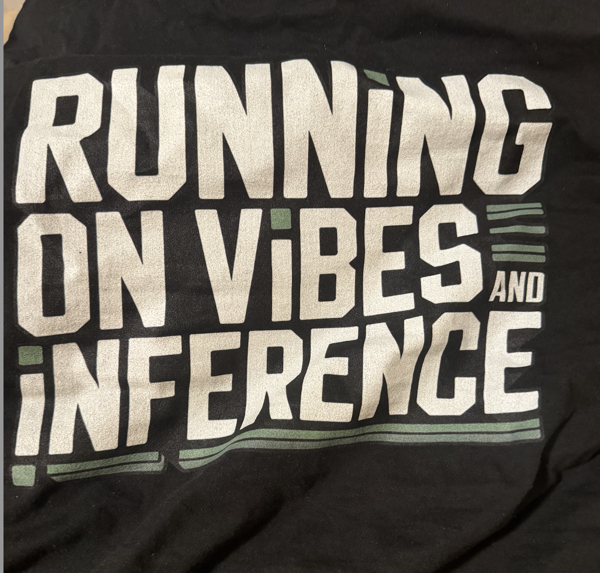
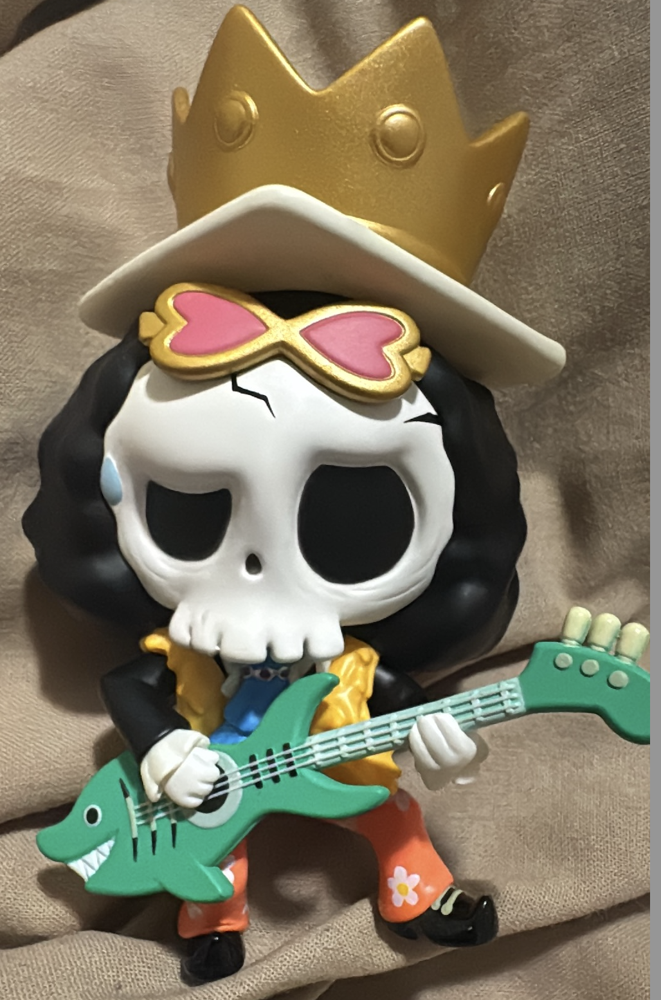

Monday
Today after working in the C++ mines I took advantage of the nice day and went for a walk. It was very pleasant but not very newsworthy.
Tuesday
Once I finished pressing tab a bunch of times I went to my government class. Today was mainly a review of what would be on the final exam and some preliminary capstone presentation stuff. For a bit of context, on the final exam we are going to have to draw a map of how the SF government system works along with a timeline of some key events in the history of SF. I worked together in a group of a few students to make our version of the political system :D

WE still have a way to go compared to the original

but we might just be in shape to pass the final. As part of the final we have to draw this whole map and answer a bunch of quiz questions AND we have to get 90% or higher on the final to pass. It sounds daunting but then I remembered that this is just a class I’m doing for fun. If I don’t pass it's not really a big deal.
We also reviewed our capstone projects. For these we have to pick a topic related to SF government and research it. The people in our group made a wide variety of progress on their projects. On the one hand you have me who asked Claude a few questions about how the SF MUNI wound up being in such a budget deficit that there are multiple ballot measures about raising money to save it, and on the other you have someone who already has a full website with his finished project with multiple graphs and other fun visuals. It’s also pretty obvious from this spread who actually intends to use this class as a springboard to go further in the local government stack.
Wednesday
Once I finished turning some kind of KIND bar into code I went to Midnight Runners with “The Quant” and “Sergeant Sassy”. Fun fact that this run marks just about the two year anniversary of when I started doing MR.
Many of you already know this story but the first time I ever did MR I struggled to finish the first mile and only did so because a girl I went on some Hinge dates with was there and I didn’t want to look bad in front of her (mind her she already said she wasn’t interested but even still my pride demanded I keep going). Nowadays I can easily finish and I can even be close to the front if I try. While not my best pace ever (throw back to the time “Top of the Rope” went and I really pushed myself trying to make this sprint intervals), I still think I did reasonably enough

After the run I hung out at the bar for a little bit. I wished I could have stayed longer but those newsletters don’t write themselves and sadly I’ve gotten into the habit of doing a major push on Wednesday nights
Thursday
After some clicky and a little clacky I caught up with “The Enabler” and we got KBBQ at Kogi Gogi. He wanted to try the place after hearing me talk about it so much so I was really excited when he said he wanted to go. The meat was great as always and it’s always a pleasure showing my usual orders. The conversation was also great of course, the way he is talking about doing standup makes me want to get back into it. So much so in fact that I actually emailed my old standup teacher asking if I can sign up for another class. Who knows if it goes well I might actually be in the same class as “The Enabler” and we can do the same grad show :D and I’ll make “The Enabler” look better by comparison.
Afterwards I originally planned to go to Whole Foods to do a bit of shopping. For context tomorrow I’m going to be braising lamb shank for a shadowy cabal who will be entering my house and judging me based on this lamb shank. This should be crunch time, the time where I lock in, buy the ingredients, and get ready to make a lamb shank so good the shadowy cabal will only make fun of me a little bit.
But instead I decided to eschew such responsibilities and go to bar night and chat with “The Philosopher,” “The Mosher,” and “The Twitch Streamer”. “The Philosopher” reminds me that my life is ultimately pretty compressible. While I have done some cool or interesting things the vast majority of my life is pretty routine. I’m not really sure entirely what I should do about that but it’s worth thinking about. Do I want to try more hobbies? Maybe have some more crazy adventures? What are the advantages of having a more interesting life? Would it be more satisfying? Would I be happier? I don’t really know entirely but it’s worth thinking about.
Perhaps then at least I can make these newsletters better. Perhaps I can set some goal of one new hobby or interest (not one that I necessarily need to stick with) a month. That might help make my life slightly less compressible.
Friday
Today is my 30th birthday. A bunch of people asked how it feels and to be honest I can’t say there has been much of a difference. While I enjoy the social capital I can get from birthdays, to be honest I don’t really care about them all that much. I know some people really dread their birthdays because it means they are a year older or they really look forward to them, to me it kinda just feels like another day.
Once I finished bisecting a CI failure a whole bunch I sprint to Safeway to start buying all the stuff I need for a lamb shank. I’m supposed to follow a recipe which includes all the following
Lamb shank
Worcester sauce
Wine (for braising)
Whole grain Mustard
Chicken broth
Medium shallots
Mint
Olive oil (I already have this)
Salt + freshly ground black pepper (I already have this)
Cloves of garlic
By the time I leave work I have about 2 hours on the clock before the cabal enters my house and begins the assessment and the verbal beating so I don’t have too much time to lose. At Safeway I’m able to get these
Worcester sauce (easy)
Whole grain Mustard (easy)
Mint (easy)
I have to make some improvisations to the following
Shallots (I replace with Onion since I’m pretty sure Shallots are just midget Onions)
Cloves of garlic (hopefully garlic powder works here)
Wine (Not sure which to use so I go with a cooking wine)
Once this is done I go to Costco and meat up with “The Quant” to get the main star of the dish, the lamb shank. Sadly we get there and find out that there is no lamb shank. We search all over and come up with nothing :(. Thankfully we found a beef shank which should work about as well. “The Quant” also got a rack of lamb so we still got some lamb.
We head back to my place and I start getting ready to cook. Astute readers might have noticed that I forgot to get the Chicken Broth, so I made a call out to the Cabal to get it.
Shortly thereafter the cabal came, including “The Mosher (who got the Chicken Broth),” “The Philosopher,” and his friend / coworker “The Awepartment”.
As everyone settled down I began the braising process which was actually pretty straight forward. The crux of the process is basically to sear the meat for a while and to put in all the different sauces, onions, and mint, and then put the meat in the oven to braise.
There were a few wrinkles in the process here. For one thing I couldn’t find my singular butter knife so I chopped the onions with a plastic fork. To be fair it was the backside of said fork. When “The Mosher” found out he promptly put his hand on his head in disappointment.
Once the meat was in the oven we had about 2.5 hours for it to braise. At one point “The Philosopher” challenged me to eat some spicy hot sauce on a chip. I doused the chip in hot sauce and while I wish I could tell you I no sold it I got rekt. It turns out my spice tolerance isn’t as good as I thought it would be and I was dying for about 5-10 minutes. I sprinted to get water, spat out the window repeatedly, and did some weird dance that “The Philosopher” called “The Humza emote”.
At the same time “The Quant” was cooking up the lamb shanks and wound up causing the smoke alarm to go off and the air quality in the apartment to shoot up. It got so bad we wound up using “Franklin” as an actual air purifier which is not something that happens frequently. At one point the AQI jumped up to 999

Thankfully “Franklin” came in clutch and we stabilized the air quality after a while. We also did the old trick from college where you take some aluminum foil and wrap it around the smoke alarm to silence it.
Then after a while of just hanging out the beef was ready!

When the cabal ate the lamb they said it tasted more boiled than braised but the texture was good. And I think it fell off the bone. I was told it was a 6/10 for my first attempt but otherwise a 3/10.
While there is obviously room for improvement I am definitely glad that I gave it a shot.
Saturday
When I woke up I had the realization that as fun as the scavenger hunt I was originally planning for my birthday would have been, it likely wouldn’t have worked out given the logistics of coordinating with everyone and making sure the picnic afterwards would work out. In the end I decided to prioritize the picnic as I thought that would be more inclusive so I cancelled the scavenger hunt. In case anyone is curious here are the questions. I won’t give the answers here but if you think you know what they are message me. All these questions point to a specific location in GGP so that is what the answer should reflect :D
You can find these all over serving SF since 1963 but look for one where you would expect business to be blooming
What did the buffalo say when his son went to school?
Remember what the answer is?
I keep going and yet I’m going nowhere.
My brother in Christ I believe in you
They’re a canyon, a park, and part of something here
Do I wanna do this? I know one of you does. It’s kinda up in the air (As a slight hint “The Enabler,” “The Dentist,” and “La Tacqueria Royalty” have a slight edge knowing who the “One of you” is but it’s not required to solve the riddle)
After updating the guests I went to trash pickup with “The Notetaker,” “The Ravenkeeper,” and others. I really like hanging out with one of “The Ravenkeeper’s” friends who I have an ongoing bit with to never learn her actual name. I generally refer to her by whatever she is wearing at the time which today happened to be a striped shirt so today she is striped shirt.
Once pickup was done I went to go buy a bunch of stuff for the picnic. I know what some people like, for example I know “The Raja of Rhythm” really likes probiotic drinks so I made sure to get some, I know some folks like Himalayan popcorn. Someone requested all of these

I suspect it’s “The Philosopher” given his nature. I briefly considered getting the ketchup flavored oreos but wind up not.
There are also some less troll requests like these which I accommodate.
I never figured out who requested these though. If it was you let me know I am VERY curious.
The picnic itself is great! We have a wide variety of guests including “Top of the Rope,” “The Quant,” The Notetaker,” “The Ravenkeeper,” “The Taco,” “Striped shirt,” “The Awepartment,” “The Philosopher,” “The Philosopher’s sister,” “The Raja of Rhythm,” “The Enabler,” “La Tacqueria Royalty,” “The Dentist,” three people without nicknames, “Mr. Greenflag,” “The Trash Queen,” “The Rugby Player,” “Sustainably Fashionable,” “Sergeant Sassy”, “The Fisherman,” “Always up for a disc-ussion,” and “Breaking it Down”. I really want to thank all of you for coming it really does mean a lot to me seeing all you come out and celebrate with me. Shoutout to those of you who were looking for parking for 40 minutes because GGP + memorial day can be ugly, y’all are troopers!
I mentioned above that I don’t intrinsically care about birthdays all that much but seeing all of you in one place like this is exactly why I like leveraging my birthday!
Also shoutout to “The Taco” for coming up with such an awesome birthday card!

I got some other great presents including these shirts from “The Quant”


(For the Nacho Average Engineer one I think I’ll wear that for my annual performance review coming up in about a month)
And I got this One Piece labooboo from “La Tacqueria Royalty”

I don’t know if any of you are anime only for One Piece but if you’re caught up to the manga than you were probably thinking the same thing I was when you saw this.
As Karl got his filthy mitts on GGP, the picnic came to a close. Before leaving I learned that “The Philosopher” was not in fact responsible for the troll requested items and it was really “Sergeant Sassy” all along. That was definitely a plot twist I wasn’t expecting. Me, “The Quant,” “The Raja of Rhythm” and “The Filmmaker” who joined us after the picnic got dinner at Volcano Curry which was awesome. While there we talked a bit about “The Filmmakers” upcoming movie which will be premiering in June which I’m really excited for.
After dinner we went to karaoke at Taisho which was a blast. I learned a valuable lesson though that I can’t do Rap God if I do 3 songs before then. To be honest I think I gave the worst performance I ever gave of the song :( but it was still great. I did a cantonese pop song with “The Quant” which was really funny. It was an awesome end to a great time with all of you!!
Sunday
The day begins with trash pickup with “The Philosopher,” “The Philosopher’s sister,” “The Notetaker” and a few other friends. The post trash pickup festivities are unusually short today and within an hour I find myself wandering around with not much to do.
On my way back I ran into someone else from the pickup who I know but not super well. She’s an older Spanish teacher at some high school here. We wind up going on a spontaneous walk around the neighborhood and get to know each other better.
I asked her what it’s like to be a teacher and she said it's harder these days because the youth don’t have an attention span thanks to Tok Tik and all that. I also asked her what she would want to change about education and she mentioned wanting smaller classes with the ability to teach less to a curriculum which seems pretty standard for teachers to want. She asked me how practical such changes would be and I gave her my cynical view that she would have to raise a lot of $$ and show something pretty reasonable to get it off the ground. Not to mention accreditation and all that. It’s interesting to think about but like many would imagine education reform is hard.
Once we parted ways I spent a good chunk of the day just walking around somewhat aimlessly. It’s been a while since I had so much time where I had nothing to do. I’ve written before that I want to get better at managing these types of situations so I decided to focus on not doing much. I went to Panhandle and challenged myself to lie down and do absolutely nothing. No going on my phone, no falling asleep, just lying down and looking up into the sky. I managed to do this for about 40 minutes or so before I first looked at my phone. Since the weather was nice it was actually a pretty pleasant experience.
I continued aimlessly wandering for a while before deciding to go home and do some of my government class homework. Before I finish the class I have to watch a Board of Supervisors meeting and a Commission meeting. Ideally this would be done in person but I don’t have time for that during the week so instead I watched online and sped through it.
For the Supervisors meeting I notice they take roll multiple times and they ask each of the 11 supervisors if they are there even though the roll taker could use their eyes and confirm this. This feels like bureaucratic bullshit. Also they always acknowledge they are on native land which is fine I suppose but kinda interesting. They also acknowledge that the natives never surrendered nor were defeated which I’m not sure I would agree with given history but OK. The meeting itself was alright. Mayor Lurie made a monthly appearance to talk about the new SF budget which would involve laying off government workers. Some people were supposed to get commendations from the board for lifetimes of service or something which was incredibly boring and I’m glad I skipped through. After some random stuff I don’t care enough to look up and tell you guys the floor was open to members of the public to talk about whatever they want. One person said that they didn’t have to pay attention to her as she read aloud from some book talking about massive wealth inequality which was sorta funny. I can appreciate the sentiment but doing it this way does strike me as a little bit humorous and if I’m being honest can feel a bit more like she is trying to make herself feel better than doing something that would lead to genuine change.
I then watched a Planning Commission meeting which felt a bit more grounded. The meeting was mainly about approving some places for conditional use. For example some people want to open a library / bar in a palace that used to be a pet store in a residential area. The other neighbors of the area made them agree to some conditions like when alcohol could be served and that there would be no drinking outside the establishment which isn’t super gripping political theater but mildly intriguing to see how these things actually come about.